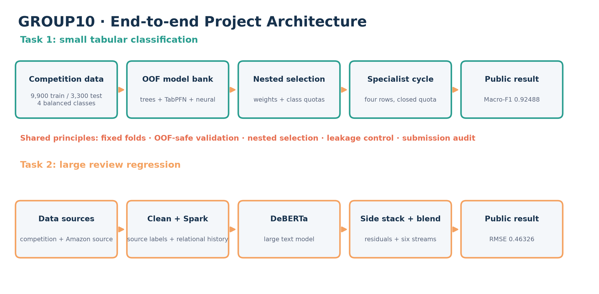
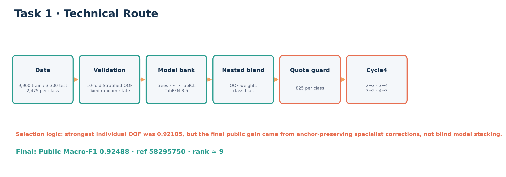
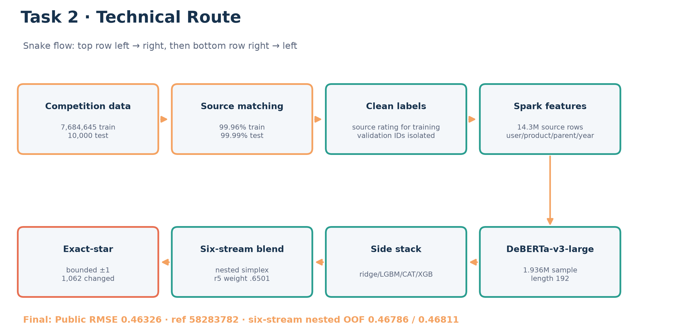

GROUP10 · COMP5434 · PROJECT PORTFOLIO
Two Kaggle systems.
One validation-first workflow.
天气分类与评论评分预测：从数据审计、防泄漏验证、GPU 实验，到 nested ensemble 和可复现提交。
OOF-safe validationSparkTabPFNDeBERTanested ensembling项目地图 / Project map

两个任务的技術主线
Task 1 · Tabular classification
Tree ensembles → TabPFN-3.5 → specialist/OVR signals → 825-per-class quota → four-row closed cycle. Final: 0.92488.
Task 2 · Review regression
Amazon source matching → clean labels → Spark relational features → DeBERTa-v3-large → cross-fitted side stack → six-stream nested blend → exact-star. Final: 0.46326.
工程纪律 / Engineering discipline
Fixed folds · OOF/test provenance · cross-fitting · class quotas · submission hash validation · explicit limitation notes.
Task 1 technical route

Task 2 technical route

关键发现 / Key findings
Label quality dominated
Task 2 source matching changed the target from noisy course labels to source ratings; supplied labels agreed only about 80% of the time.
Small correction, ranking impact
Task 1 cycle4 changed only four rows while preserving 825 predictions per class and improved Public Macro-F1 to 0.92488.
Diversity after validation
TabPFN, tree models and DeBERTa streams were retained only when same-row nested OOF evidence supported them.
风险与边界 / Risks
Task 1 Public/private variance and Task 2 external-data policy are explicit risks. Test source ratings are diagnostic only and do not enter fitting, feature construction, or blend selection. Total offline time is not claimed because all stages were not timed under one unified protocol.